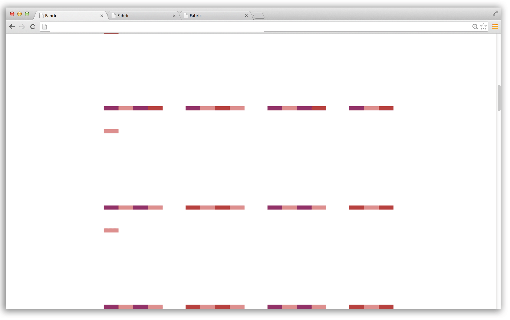
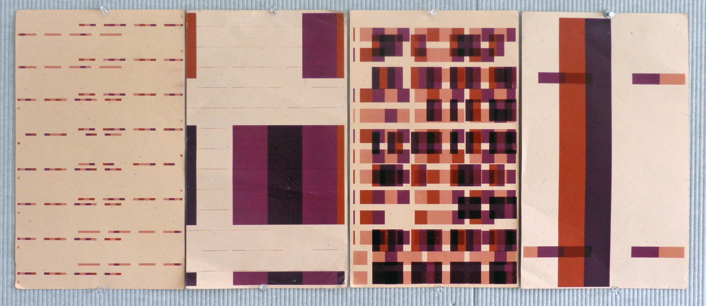

In this project I explored color overlays, transparency and printing multiple web pages onto a single sheet of paper. It was an opportunity to start thinking about whether the browser should mimic the look of overpinting on screen before printing, or allow the user to gain more control by feeding a sheet through a printer multiple times to accomplish the same effect. Questions to consider — was it apporpriate to adjust scale of the web page using the print dialog box or resize the browser window to make crops? What were the results for each pursuit?



Here a few of the printing results...
